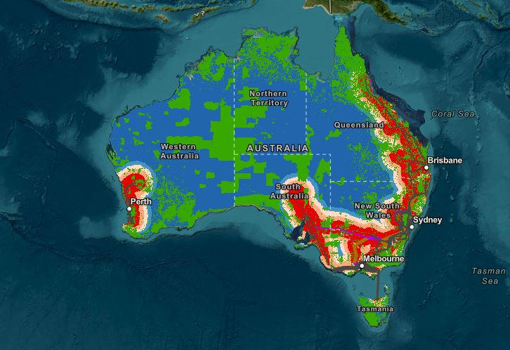

Freshwater is found in lakes, rivers, soil, snow, groundwater and ice,
and is one of the most essential of Earth's resources, for drinking
water and agriculture. However, the distribution of freshwater around
the planet is changing. Researchers used a pair of satellites called
the Gravity Recovery and Climate Experiment, or GRACE, to track
freshwater movement over the last fifteen years. The twin GRACE
satellites were launched in 2002 as a joint mission between NASA and
the German Aerospace Center (DLR). The two satellites precisely
measured the distance between themselves to detect changes in Earth's
gravity field caused by movements of mass on the planet below, caused
by shifts in water and ice. They found that some regions' water
supplies are relatively stable, others experienced increases or
decreases. Climate change has driven freshwater loss from the ice
sheets at the poles, which has implications for sea level rise. Other
areas saw groundwater depletions because of humans using water for
irrigating crops or increases due to higher amounts of rainfall
because of natural variability. Watch the video to learn more.
satellites were launched in 2002 as a joint mission between NASA and
the German Aerospace Center (DLR). The two satellites precisely
measured the distance between themselves to detect changes in
Earth's gravity field caused by movements of mass on the planet
below, caused by shifts in water and ice. They found that some
regions' water supplies are relatively stable, others experienced
increases or

decreases. Climate change has driven freshwater loss from the ice
sheets at the poles, which has implications for sea level rise.
Other areas saw groundwater depletions because of humans using water
for irrigating crops or increases due to higher amounts of rainfall
because of natural variability. Watch the video to learn more.